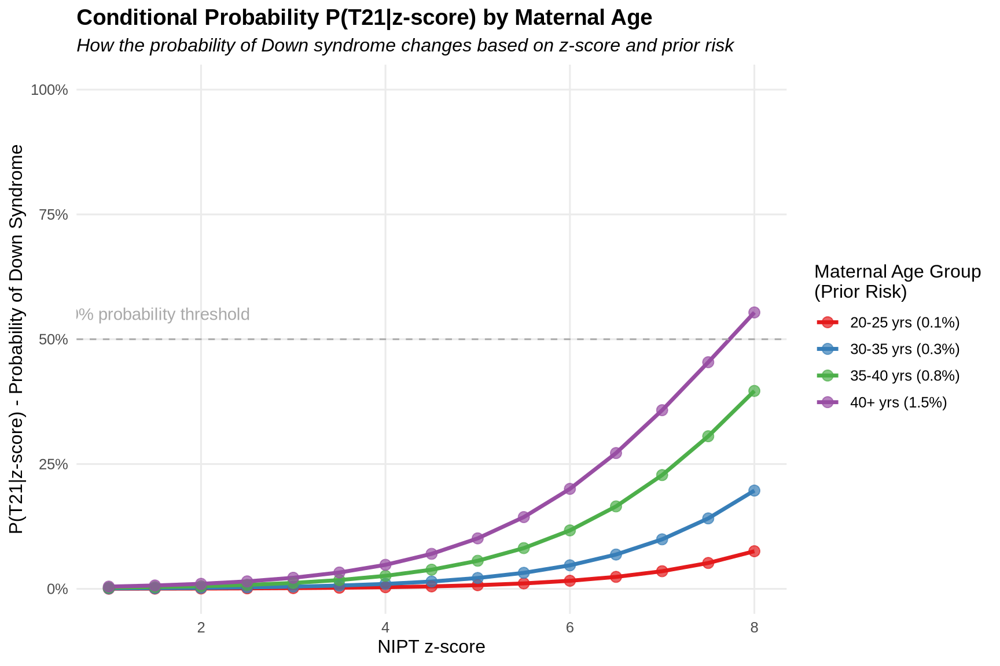

Risk factors (priori risk): - Maternal age - Likelihood from nuchal translucency thickness - Serum pregnancy-associated plasma protein-A - Serum free B-human chorionic gonadotropin and plasma cfDNA
Positive likelihood ratio (trisomic/euploid) Negative likelihood ratio (euploid/trisomic)
Posteriori risk (Sikkema-Raddatz et al., 2016) > True likelihood of carrying a foetus with trisomy
Conditional Probability (https://en.wikipedia.org/wiki/Conditional_probability)
Reference Application
NIPTRIC: an online tool for clinical interpretation of non-invasive prenatal testing (NIPT) results
alt text
The tool takes input: - a priori risk - z-score
Output: - PPR (posteriori risk)
“For z<5, PPR is considerably higher at a high a priori risk than at a low a priori risk”
“The PPR is effectively independent under all conditions for Z-scores above 6”
What is an “a priori risk”?
Personalized a posteriori risk
Conditional Probability
Conditional probability is the foundation of the Bayesian approach used in NIPT. Let’s break it down using intuitive examples from prenatal testing.
The Basic Concept
Conditional probability is about how the probability of one event changes when we know another event has occurred.
We write it as P(A|B), which means “the probability of A given that B has happened.”
NIPT Example: Understanding Conditional Probability
Let’s work with a concrete example:
1. Basic Probabilities in NIPT
P(T21) = Probability a baby has trisomy 21 (Down syndrome)
P(Positive) = Probability of getting a positive test result
P(T21|Positive) = Probability baby has Down syndrome given a positive test
P(Positive|T21) = Probability of a positive test given the baby has Down syndrome
2. Real-World NIPT Scenario
Imagine 10,000 pregnant women being tested:
100 babies have Down syndrome (P(T21) = 100/10,000 = 0.01 or 1%)
99 of those 100 babies with Down syndrome test positive (sensitivity = 99%)
9,900 babies don’t have Down syndrome
10 of those 9,900 babies without Down syndrome test positive (false positive rate = 0.1%)
Total positive tests: 99 + 10 = 109
3. Conditional Probability in Action
P(Positive|T21) = 99/100 = 0.99 (99%)
This is the test sensitivity
“If a baby has Down syndrome, there’s a 99% chance the test is positive”
P(T21|Positive) = 99/109 ≈ 0.908 (90.8%)
This is the positive predictive value
“If the test is positive, there’s a 90.8% chance the baby has Down syndrome”
Why Z-scores Matter in Conditional Probability
The z-score in NIPT is a continuous measure, not a binary yes/no:
P(T21|z=3) might be 50%
P(T21|z=5) might be 80%
P(T21|z=7) might be 95%
This shows how the condition (the z-score value) dramatically changes the probability of the baby having Down syndrome.
How Prior Risk Affects Conditional Probability
For a 25-year-old mother (baseline risk 0.1%):
Out of 10,000 pregnancies, only 10 babies have Down syndrome (P(T21))
With the same test characteristics, a positive result gives P(T21|Positive) ≈ 50%
This demonstrates how the conditional probability P(T21|Positive) depends heavily on the population being tested.
Example: Visualizing Conditional Probability in NIPT
library(tidyverse)library(scales)library(kableExtra)# Create a dataframe showing relationship between z-scores and conditional probability# Based on realistic but simulated data# Z-score rangez_scores <-seq(1, 8, by =0.5)# Function to calculate P(T21|z) for different age groups# Parameters estimated based on typical NIPT resultscalculate_pt21_given_z <-function(z, prior_risk) {# Likelihood ratio increases exponentially with z-score lr <-exp(0.8* z -2)# Apply Bayes theorem posterior <- (prior_risk * lr) / (prior_risk * lr + (1- prior_risk))return(posterior)}# Create dataframe with probabilities for different age groupsnipt_df <-expand.grid(z_score = z_scores,age_group =c("20-25 yrs (0.1%)", "30-35 yrs (0.3%)", "35-40 yrs (0.8%)", "40+ yrs (1.5%)"))# Set prior risks based on age groupsprior_risks <-c(0.001, 0.003, 0.008, 0.015)names(prior_risks) <-c("20-25 yrs (0.1%)", "30-35 yrs (0.3%)", "35-40 yrs (0.8%)", "40+ yrs (1.5%)")# Calculate conditional probabilitiesnipt_df$conditional_prob <-mapply( calculate_pt21_given_z, nipt_df$z_score, prior_risks[nipt_df$age_group])# Create visualizationggplot(nipt_df, aes(x = z_score, y = conditional_prob, color = age_group)) +geom_line(size =1.2) +geom_point(size =3, alpha =0.7) +scale_y_continuous(labels =percent_format(), limits =c(0, 1)) +scale_color_brewer(palette ="Set1") +labs(title ="Conditional Probability P(T21|z-score) by Maternal Age",subtitle ="How the probability of Down syndrome changes based on z-score and prior risk",x ="NIPT z-score",y ="P(T21|z-score) - Probability of Down Syndrome",color ="Maternal Age Group\n(Prior Risk)" ) +theme_minimal(base_size =12) +theme(legend.position ="right",panel.grid.minor =element_blank(),plot.title =element_text(face ="bold"),plot.subtitle =element_text(face ="italic") ) +geom_hline(yintercept =0.5, linetype ="dashed", color ="darkgray") +annotate("text", x =1.5, y =0.55, label ="50% probability threshold", color ="darkgray")

# Create a sample data table for the explanationsample_data <-data.frame(z_score =c(3, 3, 3, 3, 7, 7, 7, 7),age_group =rep(c("20-25 yrs", "30-35 yrs", "35-40 yrs", "40+ yrs"), 2),prior_risk =rep(c(0.001, 0.003, 0.008, 0.015), 2),posterior_risk =c(0.018, 0.052, 0.129, 0.219, # For z=30.883, 0.957, 0.985, 0.992# For z=7 ))# # Display the table# kable(sample_data, # col.names = c("Z-score", "Age Group", "Prior Risk", "Posterior Risk P(T21|z)"),# caption = "Example of how conditional probability changes with z-score and prior risk") %>%# kable_styling(bootstrap_options = c("striped", "hover", "condensed")) %>%# row_spec(0, bold = TRUE) %>%# row_spec(4:8, background = "#ffffd9")
Intuitive Takeaways
Context matters: The meaning of a positive test depends on who’s being tested
Conditioning changes probabilities: The probability of Down syndrome changes dramatically when conditioned on test results
Visual intuition: The higher the z-score, the more it “conditions” our understanding of the risk
Practical interpretation: When a doctor says “given your positive test and age, your risk is X%,” they’re applying conditional probability
Conditional probability helps us understand that test results don’t exist in isolation—they must be interpreted in the context of prior risk factors and test performance characteristics.
Two Conditional Probability Examples (what’s the difference???) Youtube
Bayesian’s Theorem
Bayes’s Theorem is about updating our prior beliefs when we get new evidence:
The Basic Intuition
Posterior = (Prior × Likelihood) / Evidence
What we believe after the test = (What we believed before x How likely the test result is if the condition exists) / Overall chance of seeing this test result
The Full Bayes’ Theorem
First, let’s understand the general form:
\[
P(A|B) = \frac{P(B|A) \times P(A)}{P(B)}
\]
Where:
P(A|B) = Probability of A given B (posterior)
P(B|A) = Probability of B given A (likelihood)
P(A) = Prior probability of A
P(B) = Overall probability of B
Translating to our NIPT example:
A = “Baby has Down syndrome”
B = “Test came back positive”
P(A) = Prior probability = 1/100 (1% risk based on maternal age)
P(B|A) = Sensitivity = 0.99 (99% chance of positive test if Down syndrome present)
P(B|not A) = False positive rate = 0.001 (0.1% chance of positive test if no Down syndrome)
How can I get the prior probability?
Does it only contains the maternal age, or it has others risk factors? If so, how to combine multiple factor?
NIPT Application Example
Let’s use NIPT for trisomy 21 (Down syndrome) as our example:
1. Start with the Prior Risk - For a 40-year-old mother, the prior risk might be 1/100 (1%) - For a 25-year-old mother, the prior risk might be 1/1000 (0.1%)
2. Understand the Test Performance - Sensitivity: ~99% (if trisomy exists, test will be positive 99% of time) - Specificity: ~99.9% (if no trisomy, test will be negative 99.9% of time)
3. Get a Test Result (z-score) - Higher z-scores (>5) suggest higher likelihood of trisomy
Prior: P(A) = 1/100 = 0.01 > This is the baseline risk for a 40-year-old mother before any testing Likelihood: P(B|A) = 0.99 > > If the baby has Down syndrome, there’s a 99% chance the test detects it
Denominator Expansion: > P(B) = P(B|A)×P(A) + P(B|not A)×P(not A)
The overall probability of getting a positive test result
P(not A) = 1 - P(A) = 1 - 0.01 = 0.99 (99% chance of no Down syndrome)
P(B|not A) = 0.001 (0.1% false positive rate)
Interpretation
This means that for a 40-year-old mother with this particular positive test result:
Before the test, her risk was 1% (prior)
After receiving this positive result, her risk is now ~91% (posterior)
The test has dramatically increased our confidence that the baby has Down syndrome
Why This Makes Intuitive Sense - We started with a modest risk (1%) - We received strong evidence (positive test with 99% sensitivity and 99.9% specificity) - This evidence dramatically shifted our belief from 1% to ~91%
For a 25-year-old with the same z-score (\(z=7\)):
Prior matters for moderate test results: With z-scores below 5, the posterior risk is highly dependent on the prior risk (maternal age, etc.)
Strong evidence can overwhelm priors: For z-scores above 6, the test result is so strong that the posterior risk becomes nearly independent of the prior risk
Visualization: The tool (i.e. in NIPTRIC case) visualizes exactly this relationship - showing how as test evidence gets stronger (higher z-scores), the initial risk factors matter less
Practical use: Doctors use this Bayesian approach to give personalized risk assessments rather than binary “positive/negative” results
This is Bayes’ Theorem in action - we start with what we know (prior), incorporate new evidence (test result), and arrive at an updated belief (posterior risk).
---title: "Risk Score Calculation in NIPT"author: "Duy Dao"date: todaydate-format: long---# Risk Score## TerminologyRisk factors (priori risk): - Maternal age - Likelihood from nuchal translucency thickness - Serum pregnancy-associated plasma protein-A - Serum free B-human chorionic gonadotropin and plasma cfDNAPositive likelihood ratio (trisomic/euploid) Negative likelihood ratio (euploid/trisomic)Posteriori risk (Sikkema-Raddatz et al., 2016) \> True likelihood of carrying a foetus with trisomyConditional Probability (https://en.wikipedia.org/wiki/Conditional_probability)## Reference Application### NIPTRIC: an online tool for clinical interpretation of non-invasive prenatal testing (NIPT) resultsThe tool takes input: - a priori risk - z-scoreOutput: - PPR (posteriori risk)> "For z\<5, PPR is considerably higher at a high a priori risk than at a low a priori risk"> "The PPR is effectively **independent** under all conditions for Z-scores above 6"#### What is an "a priori risk"?# Conditional ProbabilityConditional probability is the foundation of the Bayesian approach used in NIPT. Let's break it down using intuitive examples from prenatal testing.## The Basic ConceptConditional probability is about how the probability of one event changes when we know another event has occurred.We write it as `P(A|B)`, which means "the probability of A given that B has happened."## NIPT Example: Understanding Conditional ProbabilityLet's work with a concrete example:**1. Basic Probabilities in NIPT**- `P(T21)` = Probability a baby has trisomy 21 (Down syndrome)- `P(Positive)` = Probability of getting a positive test result- `P(T21|Positive)` = Probability baby has Down syndrome given a positive test- `P(Positive|T21)` = Probability of a positive test given the baby has Down syndrome**2. Real-World NIPT Scenario**Imagine 10,000 pregnant women being tested:- 100 babies have Down syndrome (`P(T21)` = 100/10,000 = 0.01 or 1%)- 99 of those 100 babies with Down syndrome test positive (`sensitivity` = 99%)- 9,900 babies don't have Down syndrome- 10 of those 9,900 babies without Down syndrome test positive (`false positive rate` = 0.1%)- Total positive tests: 99 + 10 = 109**3. Conditional Probability in Action**`P(Positive|T21) = 99/100 = 0.99 (99%)`This is the test sensitivity> "If a baby has Down syndrome, there's a 99% chance the test is positive"`P(T21|Positive) = 99/109 ≈ 0.908 (90.8%)`This is the positive predictive value> "If the test is positive, there's a 90.8% chance the baby has Down syndrome"## Why Z-scores Matter in Conditional ProbabilityThe z-score in NIPT is a continuous measure, not a binary yes/no:- `P(T21|z=3)` might be 50%- `P(T21|z=5)` might be 80%- `P(T21|z=7)` might be 95%> This shows how the condition (the z-score value) dramatically changes the probability of the baby having Down syndrome.## How Prior Risk Affects Conditional ProbabilityFor a 25-year-old mother (baseline risk 0.1%):- Out of 10,000 pregnancies, only 10 babies have Down syndrome (`P(T21)`)- With the same test characteristics, a positive result gives `P(T21|Positive)` ≈ 50%- This demonstrates how the conditional probability `P(T21|Positive)` depends heavily on the population being tested.## Example: Visualizing Conditional Probability in NIPT```{r}#| label: conditional-probability-nipt#| fig.width: 9#| fig.height: 6#| warning: false#| message: falselibrary(tidyverse)library(scales)library(kableExtra)# Create a dataframe showing relationship between z-scores and conditional probability# Based on realistic but simulated data# Z-score rangez_scores <-seq(1, 8, by =0.5)# Function to calculate P(T21|z) for different age groups# Parameters estimated based on typical NIPT resultscalculate_pt21_given_z <-function(z, prior_risk) {# Likelihood ratio increases exponentially with z-score lr <-exp(0.8* z -2)# Apply Bayes theorem posterior <- (prior_risk * lr) / (prior_risk * lr + (1- prior_risk))return(posterior)}# Create dataframe with probabilities for different age groupsnipt_df <-expand.grid(z_score = z_scores,age_group =c("20-25 yrs (0.1%)", "30-35 yrs (0.3%)", "35-40 yrs (0.8%)", "40+ yrs (1.5%)"))# Set prior risks based on age groupsprior_risks <-c(0.001, 0.003, 0.008, 0.015)names(prior_risks) <-c("20-25 yrs (0.1%)", "30-35 yrs (0.3%)", "35-40 yrs (0.8%)", "40+ yrs (1.5%)")# Calculate conditional probabilitiesnipt_df$conditional_prob <-mapply( calculate_pt21_given_z, nipt_df$z_score, prior_risks[nipt_df$age_group])# Create visualizationggplot(nipt_df, aes(x = z_score, y = conditional_prob, color = age_group)) +geom_line(size =1.2) +geom_point(size =3, alpha =0.7) +scale_y_continuous(labels =percent_format(), limits =c(0, 1)) +scale_color_brewer(palette ="Set1") +labs(title ="Conditional Probability P(T21|z-score) by Maternal Age",subtitle ="How the probability of Down syndrome changes based on z-score and prior risk",x ="NIPT z-score",y ="P(T21|z-score) - Probability of Down Syndrome",color ="Maternal Age Group\n(Prior Risk)" ) +theme_minimal(base_size =12) +theme(legend.position ="right",panel.grid.minor =element_blank(),plot.title =element_text(face ="bold"),plot.subtitle =element_text(face ="italic") ) +geom_hline(yintercept =0.5, linetype ="dashed", color ="darkgray") +annotate("text", x =1.5, y =0.55, label ="50% probability threshold", color ="darkgray")# Create a sample data table for the explanationsample_data <-data.frame(z_score =c(3, 3, 3, 3, 7, 7, 7, 7),age_group =rep(c("20-25 yrs", "30-35 yrs", "35-40 yrs", "40+ yrs"), 2),prior_risk =rep(c(0.001, 0.003, 0.008, 0.015), 2),posterior_risk =c(0.018, 0.052, 0.129, 0.219, # For z=30.883, 0.957, 0.985, 0.992# For z=7 ))# # Display the table# kable(sample_data, # col.names = c("Z-score", "Age Group", "Prior Risk", "Posterior Risk P(T21|z)"),# caption = "Example of how conditional probability changes with z-score and prior risk") %>%# kable_styling(bootstrap_options = c("striped", "hover", "condensed")) %>%# row_spec(0, bold = TRUE) %>%# row_spec(4:8, background = "#ffffd9")`````` ```## Intuitive Takeaways- **Context matters**: The meaning of a positive test depends on who's being tested- **Conditioning changes probabilities**: The probability of Down syndrome changes dramatically when conditioned on test results- **Visual intuition**: The higher the z-score, the more it "conditions" our understanding of the risk- **Practical interpretation**: When a doctor says "given your positive test and age, your risk is X%," they're applying conditional probabilityConditional probability helps us understand that test results don't exist in isolation—they must be interpreted in the context of prior risk factors and test performance characteristics.## References & Learning resourceshttps://en.wikipedia.org/wiki/Conditional_probability1. Intro to Conditional Probability: [Youtube](https://www.youtube.com/watch?v=ibINrxJLvlM)2. Two Conditional Probability Examples (what's the difference???) [Youtube](https://www.youtube.com/watch?v=OYT0AcuLXu8)# Bayesian's TheoremBayes's Theorem is about updating our prior beliefs when we get new evidence:## The Basic Intuition``` Posterior = (Prior × Likelihood) / Evidence```> What we believe after the test = (What we believed before x How likely the test result is if the condition exists) / Overall chance of seeing this test result## The Full Bayes' TheoremFirst, let's understand the general form:$$P(A|B) = \frac{P(B|A) \times P(A)}{P(B)}$$Where:- **P(A\|B)** = Probability of A given B (posterior)- **P(B\|A)** = Probability of B given A (likelihood)- **P(A)** = Prior probability of A- **P(B)** = Overall probability of B**Translating to our NIPT example:**- **A** = "Baby has Down syndrome"- **B** = "Test came back positive"- **P(A)** = Prior probability = 1/100 (1% risk based on maternal age)- **P(B\|A)** = Sensitivity = 0.99 (99% chance of positive test if Down syndrome present)- **P(B\|not A)** = False positive rate = 0.001 (0.1% chance of positive test if no Down syndrome)> How can I get the `prior probability`?> Does it only contains the maternal age, or it has others risk factors? If so, how to combine multiple factor?## NIPT Application ExampleLet's use NIPT for trisomy 21 (Down syndrome) as our example:**1. Start with the Prior Risk** - For a 40-year-old mother, the prior risk might be 1/100 (1%) - For a 25-year-old mother, the prior risk might be 1/1000 (0.1%)**2. Understand the Test Performance** - Sensitivity: \~99% (if trisomy exists, test will be positive 99% of time) - Specificity: \~99.9% (if no trisomy, test will be negative 99.9% of time)**3. Get a Test Result (z-score)** - Higher z-scores (\>5) suggest higher likelihood of trisomy``` > This is your `"new evidence"````**4. Update the `Prior Risk` to Get `Posterior Risk`**For a 40-year-old with a high z-score (z=7):$$\text{Posterior Risk} = \frac{\frac{1}{100} \times 0.99}{\left(\frac{1}{100} \times 0.99\right) + \left(\frac{99}{100} \times 0.001\right)}\approx 0.99 \text{ or } 99\%$$**Breaking Down Each Component**- Prior: P(A) = 1/100 = 0.01 \> This is the baseline risk for a 40-year-old mother before any testing Likelihood: P(B\|A) = 0.99 \>\> If the baby has Down syndrome, there's a 99% chance the test detects it- Denominator Expansion: \>`P(B) = P(B|A)×P(A) + P(B|not A)×P(not A)`- The overall probability of getting a positive test resultP(not A) = 1 - P(A) = 1 - 0.01 = 0.99 (99% chance of no Down syndrome)P(B\|not A) = 0.001 (0.1% false positive rate)**Interpretation**This means that for a 40-year-old mother with this particular positive test result:- Before the test, her risk was 1% (prior)- After receiving this positive result, her risk is now \~91% (posterior)- The test has dramatically increased our confidence that the baby has Down syndrome**Why This Makes Intuitive Sense** - We started with a modest risk (1%) - We received strong evidence (positive test with 99% sensitivity and 99.9% specificity) - This evidence dramatically shifted our belief from 1% to \~91%------------------------------------------------------------------------For a 25-year-old with the same z-score ($z=7$):$$\text{Posterior Risk} = \frac{\frac{1}{1000} \times 0.99}{\left(\frac{1}{1000} \times 0.99\right) + \left(\frac{999}{1000} \times 0.001\right)}\approx 0.50 \text{ or } 50\%$$## Key Insights from the NIPT Example- **Prior matters for moderate test results**: With z-scores below 5, the posterior risk is highly dependent on the prior risk (maternal age, etc.)- **Strong evidence can overwhelm priors**: For z-scores above 6, the test result is so strong that the posterior risk becomes nearly independent of the prior risk- **Visualization**: The tool (i.e. in NIPTRIC case) visualizes exactly this relationship - showing how as test evidence gets stronger (higher z-scores), the initial risk factors matter less- **Practical use**: Doctors use this Bayesian approach to give personalized risk assessments rather than binary "positive/negative" resultsThis is Bayes' Theorem in action - we start with what we know (prior), incorporate new evidence (test result), and arrive at an updated belief (posterior risk).